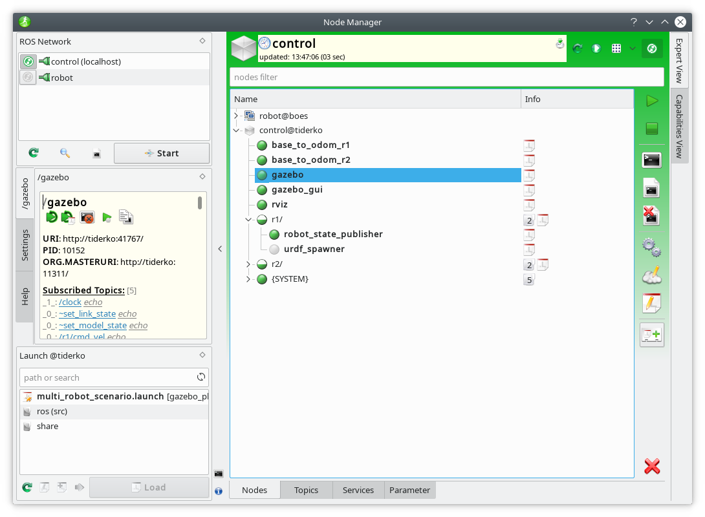

Usage
ROS NetworkHost description panel
ROS Nodes view and control
ROS Topics view
ROS Services view
ROS Parameter view
Launch Dock
Launch Editor
Description Dock
Capabilities and additional description
Node Manager Daemon
Capability View
Settings
Key Bindings
Troubleshooting
-
Error while launch a node on remote host: ''bash: rosrun: command not found''
- To run a node on remote host, an SSH connection will be established without setting any enviroment variables. Try to comment out in .bashrc:
#[ -z "$PS1" ] && return -
The `Node Manager` crashes on load a launch file with error: ''QSpiAccessible::accessibleEvent not handled: "8008"''
- This "bug" seems to be resolved by removing the ''qt-at-spi'' package.
-
You don't see the correct output of your nodes.
- Try to change your default terminal:
sudo update-alternatives --config x-terminal-emulator